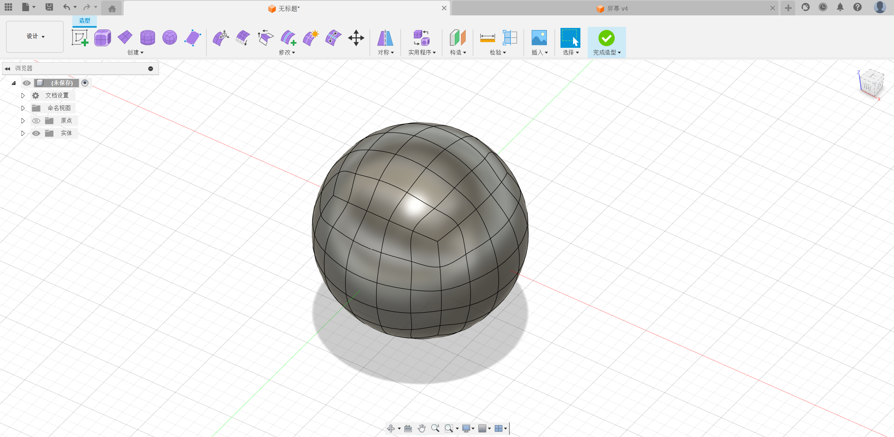

The container we designed is a potted plant with sensors placed around the potted plant
This is our display, it's LCD 1.69, and our text, expressions, and data comparisons will be displayed on it. (Small parts information is collected from the Internet, directly inserted, so there is no animation form)
Process and parameters

Engineering Drawing
Similar software introduction
Broadly speaking,CAD(computer-aideddesign)is a brand-new design method,which is
gradually replacing the traditional hand-drawn drawing era,and is now almost essential to
the design of products and projects in industry and construction.Based on the design
concept of computer-aided design CAD,many design software have come into being,
including AutoCAD, Caxa, MDS and soon.
CAXA is developed by a Chinese company and supports the Windows operating system, mainly targeting the domestic market. Targeting the manufacturing industry, providing
2D drawing, 3D solid design, and process management. The operation is relatively simple and intuitive, and the design process is fixed, mainly based on
Parameterized design. Suitable for beginners or non professionals to use.